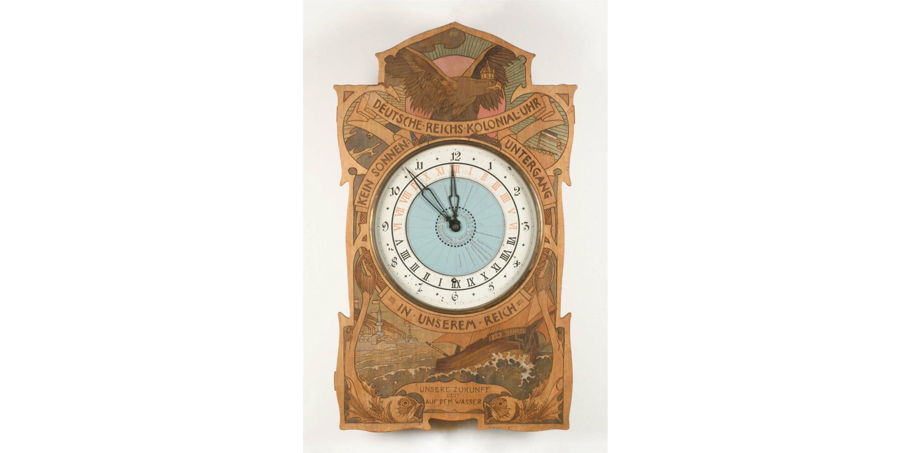

Rundgang Glanzstücke
Kolonialuhr
Um 1900 galten Kolonien als Ausdruck wirtschaftlicher Bedeutung und Größe. So verkündete das wilhelminische Deutschland stolz “Kein Sonnenuntergang in unserem Reich”. Dies bewog die Badische Uhrenfabrik in Furtwangen, eine Deutsche Reichs-Kolonial-Uhr zu entwerfen. Auf ihrem inneren Ziffernring sieht man die aktuellen Tageszeiten der deutschen Kolonien. Deutschland, so suggeriert die Uhr, hätte seinen Platz an der Sonne gefunden.
Bild der Uhr

Entstanden im Rahmen des Projektstudium 2023/24 der HFU